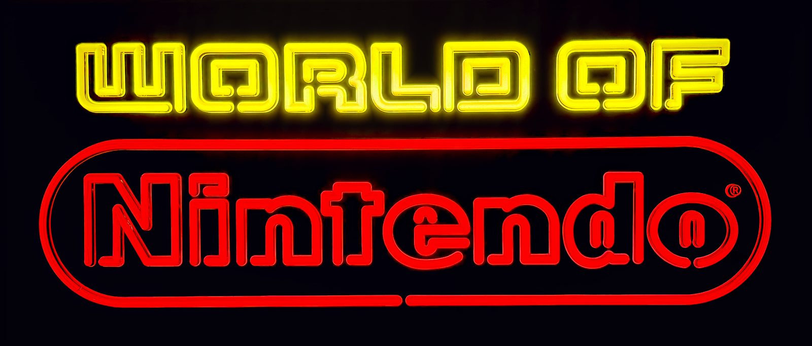
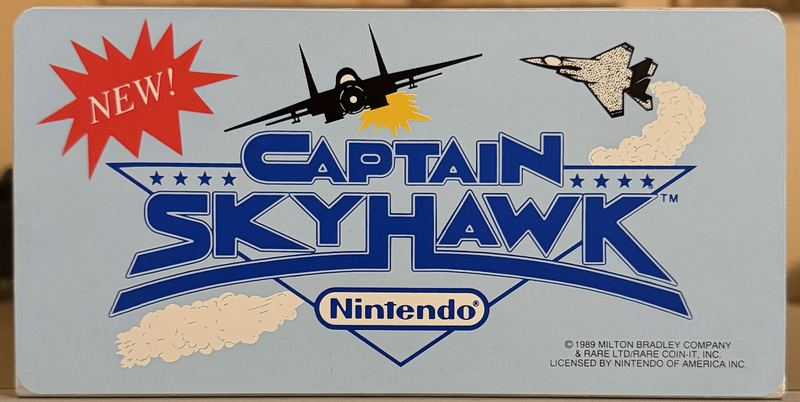

An arcade cabinet is a box that plays one game. Everything that told you which game — the topper on the crown, the instruction card on the face, the sign over the counter — was printed, disposable, and thrown out the week it stopped being current. That is why it is rare now. Three walls of it here: the retail signs, sixteen PlayChoice-10 toppers, and eighteen VS. instruction cards.
None of this ever ran a game. It hung in a toy store, or over a rental counter, and its whole job was to make a kid stop walking. Three of them survived that job and now light the game room.
In the late 1980s Nintendo stopped leaving its shelf space to the stores. Under a program it called World of Nintendo, it shipped retailers a complete store within a store — logo signage, banners, hardware and software displays, playable demo stations — so its section looked like Nintendo’s own, whatever chain it sat in. The lighted signs hung above it all. They were store fixtures, not merchandise — made to hang until the next display program replaced them.
Kay·Bee × World of Nintendo — the co-branded fiber optic, both panels lit
Fiber optic · 1990
Kay·Bee × World of Nintendo
LightFiber optic, animated
Made1990
Part no.M36C
Size6 ft × 18 in
The one sign in the room that names a store. Kay-Bee Toys started in 1922 as the Kaufman brothers’ candy wholesale business in Massachusetts — the name is just their initials, K.B. — and became the toy store in the mall: 1,324 of them by 1999, the second-largest toy chain in the country. This is the co-branded version of Nintendo’s fiber optic sign, six feet of it, with Kay·Bee in points of light beside the World of Nintendo oval. It was made for Kay-Bee stores in 1990.
Kay-Bee closed its last stores in early 2009, and its fixtures went with it. Its fiber mechanism still works perfectly: the letters shift color and sparkle through a cycle of about 24 seconds, which is exactly what the loop above shows, start to finish.
The racetrack — NESM36F, the oval that gives it the name
Fiber optic · NESM36F
The NES Racetrack
LightFiber optic, animated
Part no.NESM36F
SizeAbout 36 × 16 × 8 in
Cycle12 seconds
Collectors call the Nintendo oval “the racetrack,” and this sign is nothing but the racetrack: the wordmark in white light, ringed by two red tracks, about 530 points of light in all. Behind the face, a single lamp feeds a bundle of optical fibers, and every point on the face is the end of one fiber. As the sign runs, the letters go from white to red and back, and the pattern repeats exactly every 12 seconds.
Out of the box and on display in the game room, with its fiber mechanism still working perfectly.

The Superbrite — fluorescent, straight on, no glare
Fluorescent · Superbrite series
World of Nintendo Superbrite
Light3 × F25T12 fluorescent
Part no.M36R
SizeAbout 36 × 16 × 6 in
Built byThomas A. Schutz Co.
From across a store it reads as neon. There is no neon in it. Three F25T12 fluorescent tubes light the face from behind — that is the Superbrite idea, the look of a tube sign from ordinary fluorescents. It was built by the Thomas A. Schutz Co. of Morton Grove, Illinois, whose lighted signs also advertised beer brands.
The World of Nintendo logo is printed on both sides, but only one side lights. It was most likely made to hang in a window: lit toward the street, still readable from inside the store. This is the full logo in Nintendo’s colors, yellow World of over the red oval.
The PlayChoice-10 topper wall sixteen originals
A PlayChoice-10 held ten games at once, so the cabinet needed a way to say what was in it. Nintendo's answer was the topper: a printed sticker, applied to a metal stand that screws to the top of the cabinet, announcing the game — usually with the word NEW somewhere on it, because the whole point was to tell a room full of quarters that something had changed. Operators swapped them as the game cards rotated, which is exactly why so few survived: they were consumables, printed to be replaced.
These sixteen are originals, and the copyright lines printed on them run from Metroid's 1987 to the Turtles' 1990. They were printed for PlayChoice-10 cabinets; the canopy of the Red Tent is simply where they get displayed. More of them are still on the hunt list.

Captain SkyhawkCastlevaniaChip ’n Dale Rescue RangersContraDouble DragonDr. MarioMega Man 3MetroidMike Tyson's Punch-Out!!Ninja GaidenPro WrestlingRad RacerR.C. Pro-AmSuper Mario Bros. 2Super Mario Bros. 3Teenage Mutant Ninja Turtles II: The Arcade Game
The VS. instruction card wall eighteen cards
The Nintendo VS. System was a cabinet with a swappable board. Change the PCB and the machine became a different game — which left the operator holding a cabinet that no longer said what it was. The instruction card was the fix: a square of printed paper, fixed to the face beside the controls, carrying the title, the button layout and the rules in about two hundred words. Every card here was printed for one specific machine: the VS. DualSystem cocktail — the Red Tent in the game room.
Change the board, swap the card. It is paper, so it could go back in the drawer until that board went in again — most carry a small adhesive strip on the back, a few have no adhesive at all, and one, Top Gun, is a full sticker. These eighteen are operator stock that never went on a cabinet. Eleven are Nintendo’s own titles; six carry a licensee’s name printed right on the card, because the VS. System was a platform Nintendo rented out; the last is the PlayChoice channel-select card. Three more are still on the hunt list.
VS. BaseballVS. CastlevaniaVS. ExcitebikeVS. GolfVS. The GooniesVS. GumshoeVS. Hogan’s AlleyVS. Ice ClimberVS. Mach RiderVS. PinballVS. R.B.I. BaseballVS. Sky KidVS. SoccerVS. Super Mario Bros.VS. TennisVS. T.K.O. BoxingVS. Top GunPlayChoice